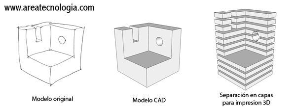

They are a type of machinery with the ability to help us build certain structures, very similar a good sculptor could get carving a stone.
A 3D printer is a device capable of reproducing a three-dimensional solid object using diferents materials, the design of which is made on a computer. The process consists of adding material layer by layer and from the bottom to top.
In the industry offers great advantages, mainly to the automotive and aerospace sectors, among others. It serves to streamline processes and make manufacturing more efficient. Learn about the applications that can bring great profitability to your projects.
3D printers to create a physical model of a design,they create layers continuously and successively until the complete and exact creation of the design in its 3 dimensions width, length and height.
The process by which printers create these layered objects is called the Additive Process.
Actually, to go hand in hand with technological advances in terms of 3D printers, accessories have been created that make this printing process easier, such as 3D scanners, which allow an object to be scanned in all its dimensions. and print it immediately and identical to the other.
In the previous image we can see 3 figures.
The first is the one that we draw ourselves on paper, for example, of the object that we want to print in its 3 dimensions
Then, with a CAD program, we design that object on our computer, which would be the second figure
Finally, we separate that object into layers to print layer by layer in the 3-dimensional printer, which is what we see in the third figure.
Go to Windows 10 and go to Settings - Devices - Printer scanners.
Press Add a printer or scanner.
Select the 3D printer and press Add Device. The printer will install automatically.
Tinkercad is an online tool offered by Autodesk.
It is used for free and only requires creating a user account.
Since it became available in 2011, it has become a popular platform for creating models for 3D printing, as well as an entry-level introduction to constructive solid geometry in schools
In this app there different ways to export files as they are